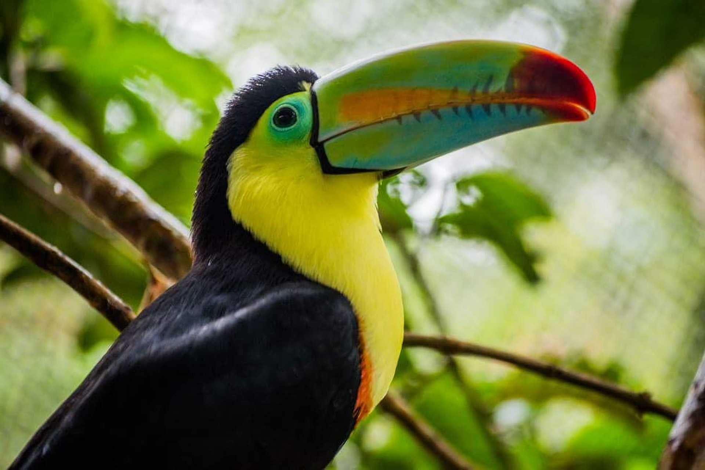
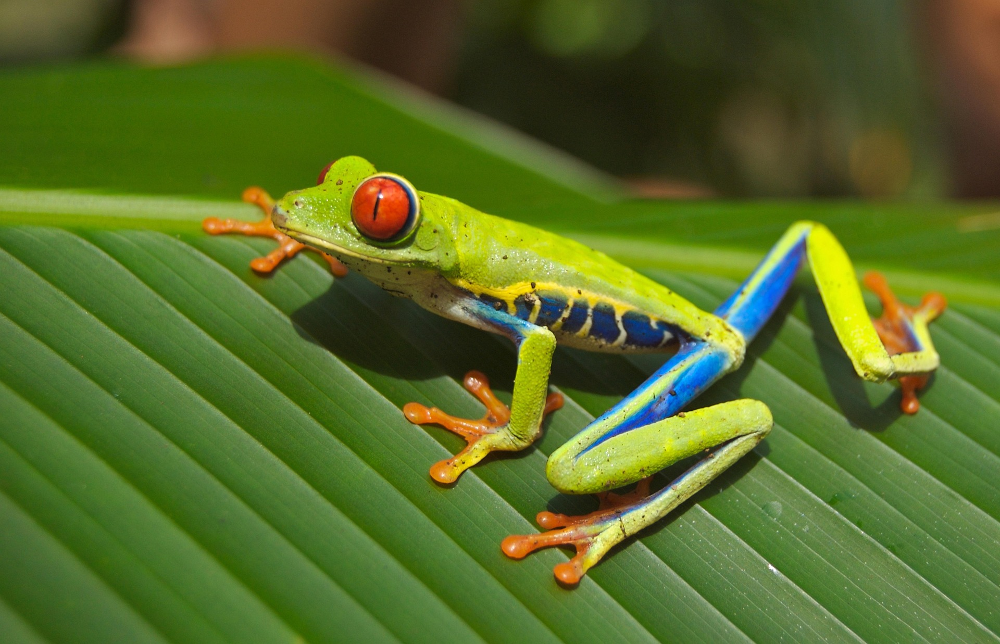

<html>
<head>
    <title>Menú Desplegable</title>
<body 
background="cas.jpg">
    <style>
          
    body { font-family: Arial, sans-serif; }
    
    .menu { margin: 0; padding: 0; list-style: none; }
    .menu li { float: left; position: relative; width: 150px; background-color: #333; }
    .menu li a { display: block; padding: 15px; color: white; text-decoration: none; text-align: center; }
    .menu li a:hover { background-color: #555; }

    .submenu { display: none; position: absolute; top: 100%; left: 0; margin: 0; padding: 0; list-style: none; }
    .submenu li { background-color: #444; width: 100%; }
    
    .menu li:hover > .submenu { display: block; }
 
    </style>
</head>
</html>
<body>

    <ul class="menu">
        <li><a href="#">Peces</a>
            <ul class="submenu">
                <li><a href="https://www.fishipedia.es/pez/betta-splendens">Pez Betta</a></li>
                <li><a href="https://www.fishipedia.es/pez/holacanthus-ciliaris">ángel reina</a></li>
                <li><a href="https://www.fishipedia.es/pez/hyphessobrycon-eques">Tetra serpae</a></li>
                <li><a href="https://www.tomscatch.com/es/especies-de-peces/marlin-blanco-11">Marlin Blanco</a></li>
                <li><a href="https://www.fishipedia.es/pez/hyphessobrycon-erythrostigma">Megalamphodus</a></li>
            </ul>
         </li>
        <li>
            <a href="#">Mamiferos</a>
            <ul class="submenu">
                <li><a href="gorila.html">Gorila</a></li>
                <li><a href="lemur.html">Lemur</a></li>
                <li><a href="caballo.html">Caballo</a></li>
                <li><a href="armadillo.html">Armadillo</a></li>
                <li><a href="reno.html">Reno</a></li>
            </ul>
        </li>
        <li><a href="#">Anfibios</a>
            <ul class="submenu">
                <li><a href="anfi2.html">Anfibios</a></li>
            </ul>
        </li>
        <li><a href="#">Aves</a>
            <ul class="submenu">
                <li><a href="https://www.nationalgeographicla.com/animales/loros">Loro</a></li>
                <li><a href="https://www.faunia.es/planea-tu-visita/animales/tucan-toco">Tucan Toco</a></li>
                <li><a href="https://deanimalia.com/selvaaguilafilipina.html">Águila Monera</a></li>
                <li><a href="https://aveschile.cl/picaflor-2/">Colibrí de Arica</a></li>
                <li><a href="https://laberintoenextincion.blogspot.com/2009/10/maca-tobiano.html">Macá Tobiano</a></li>
            </ul>
         </li>
         <li><a href="#">Reptiles</a>
        <ul class="submenu">
                <li><a href="coco.html">Cocodrilo De Agua Salada</a></li>
                <li><a href="torta.html">Tortuga gigante de galapagos</a></li>
                <li><a href="komodo.html">Dragon De Komodo</a></li>
                <li><a href="cama.html">Camaleon</a></li>
                <li><a href="ser.html">Serpiente De Cascabel</a></li>
            </ul>
         </li>
         <li><a href="index.html">Menu Principal</a>
         </li>
    </ul>

</body>
</html>
<pre>


<left><font face="Times New Roman" color="sky blue" size="500px"><marquee bgcolor="green" width="60%">Animales</marquee></font></left>


<!DOCTYPE html>
<html lang="es">
<head>
    <meta charset="UTF-8">
    <title>Efectos de Imagen</title>
    <style>
        .contenedor {
            text-align: center;
            margin-top: 50px;
 display: flex;
  justify-content:left; /* Centrado horizontal */
  height: 350px;           /* Altura necesaria para ver el centrado */
  width: 300px;
        }
 
.contenedor img {
max-width: 100%;   
  height: auto;    
}

        .efecto-foto {
            width: 150px;
            height: auto;
            transition: all 0.5s ease; /* Suaviza el cambio */
            border-radius: 10px;
            box-shadow: 5px 5px 15px rgba(0,0,0,0.3);
        }
          /* 1. Efecto Blanco y Negro a Color (al pasar el ratón) */
        .efecto-1 {
            filter: grayscale(100%); /* Inicialmente B/N */
        }
        .efecto-1:hover {
            filter: grayscale(0%); /* A color al pasar el ratón */
            transform: scale(1.1); /* Agranda un poco */
        }

        /* 2. Efecto Desenfoque (Blur) */
        .efecto-2:hover {
            filter: blur(4px); /* Desenfoca */
        }

        /* 3. Efecto Brillo (Brightness) */
        .efecto-3:hover {
            filter: brightness(150%); /* Aumenta brillo */
        }
    </style>
</head>
<body>
    <div class="contenedor">
        
        
        
        
        
        
        
        
    </div>

<center><h1><font face="Times New Roman" color="white">Equipo</font></h1></center>
<center><h2><font face="Times New Roman" color="white">Ciau Poot Didier Manuel</font></h2></center>
<center><h2><font face="Times New Roman" color="white">Zapata Dzib Alejandra Guadalupe</font></h2></center>
<center><h2><font face="Times New Roman" color="white">Gonzales Balam Carlos Roberto</font></h2></center>
<center><h2><font face="Times New Roman" color="white">Martinez Luis Angel</font></h2></center>


</body>
</html>
